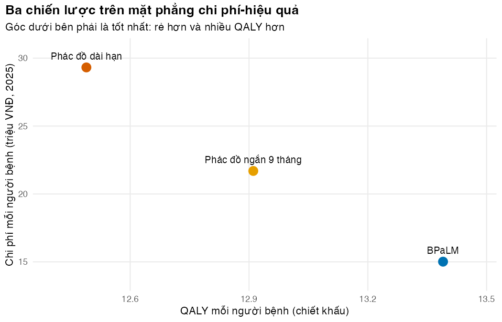
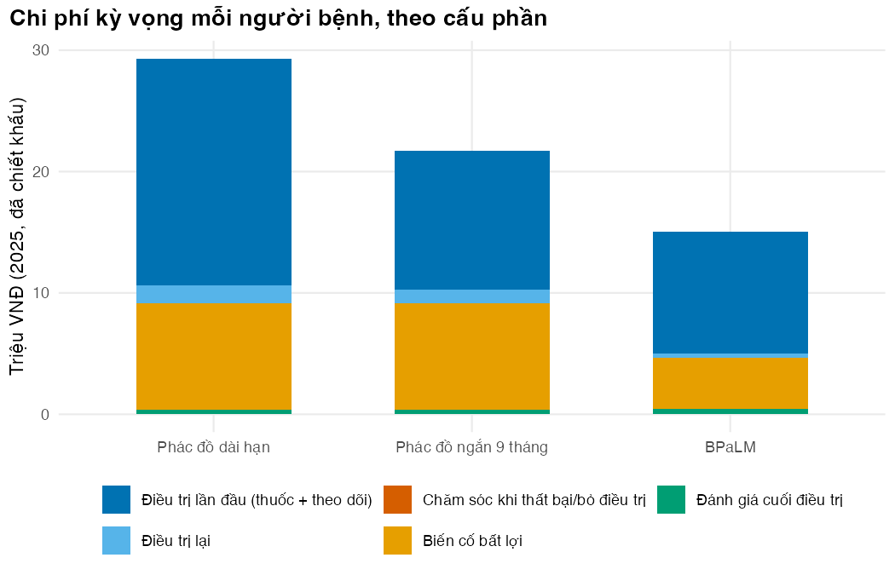
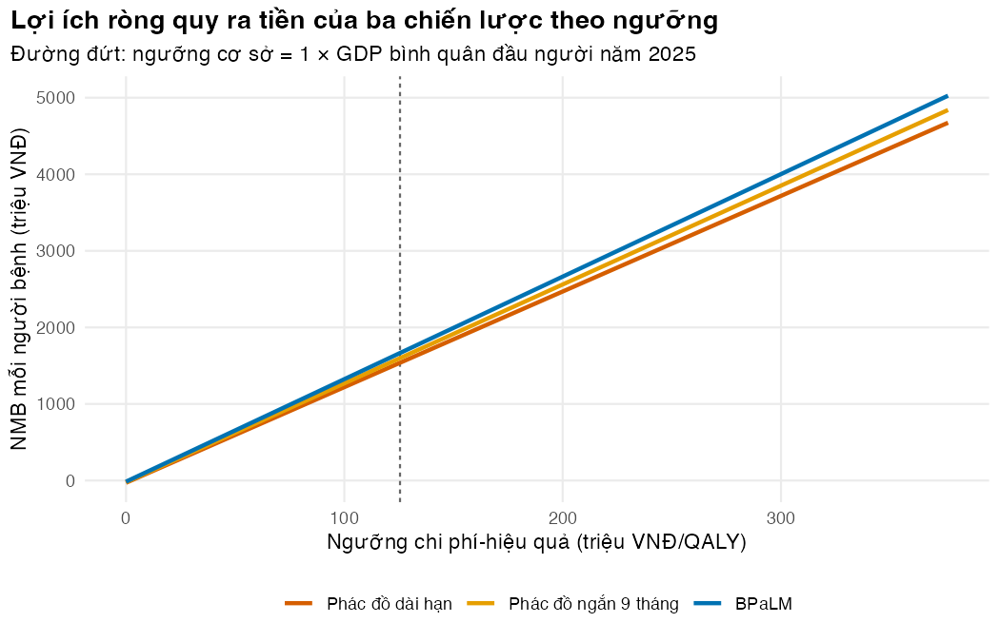

# Vietnamese text in figures needs a UTF-8 locale (Rscript may start in the "C" locale)
if (!isTRUE(l10n_info()[["UTF-8"]])) invisible(Sys.setlocale("LC_CTYPE", "en_US.UTF-8"))
source("../_shared/R/helpers.R")
source("../_shared/R/vn_data.R") # course-wide values: threshold, prices, CPI
source("code/model.R")
library(ggplot2)
p <- m02_params() # params/mdrtb.csv + shared values
ptab <- attr(p, "table")
inp <- prepare_inputs(p)
ctx <- vn_context()
# The adverse-event cost converts a 2024 study cost back to VND with the study's own rate (25,000).
# Check that it stays within a few percent of the course-wide official 2024 rate (kb/_shared).
fx_2024 <- vn_cpi_fx()$fx_vnd_per_usd[vn_cpi_fx()$year == 2024]
stopifnot(abs(p$fx_vnd_usd / fx_2024 - 1) < 0.05)Bài 5: Giá trị gắn với lần chuyển, đường biên hiệu quả và xác minh mô hình
Hoàn thiện mô hình MDR/RR-TB, so sánh ba phác đồ và chứng minh code làm đúng điều ta định làm
Vì sao bạn nên quan tâm?
BPaL/M đã có trong hướng dẫn điều trị lao quốc gia và đang được mở rộng theo từng tỉnh (SCDI 2023). Một Chương trình Chống lao tỉnh đang dùng phác đồ ngắn 9 tháng cần biết: chuyển người bệnh sang BPaLM thì tốn thêm hay tiết kiệm, và được gì về sức khỏe? Theo mô hình của module, mỗi người bệnh dùng BPaLM thay cho phác đồ ngắn tiết kiệm 6.7 triệu VNĐ cho hệ thống y tế (tính cả đời, đã chiết khấu), bằng 1.3 tháng lương tối thiểu vùng I (Chính phủ 2025), và thêm 0.48 QALY. Nếu một tỉnh chuyển 100 người bệnh sang BPaLM, mức đó là 668 triệu VNĐ tính cả đời, chưa phải khoản chi trong một năm ngân sách (M10 bàn riêng). Bài này dạy cách đọc kết quả của ba phương án cùng lúc, thử những giả định có thể lật kết luận, và chứng minh code làm đúng trước khi đưa con số lên bàn họp.
Mục tiêu học tập
Sau bài này, bạn có thể:
- Tính chi phí và QALY gắn với biến cố và lần chuyển trạng thái (giá trị gắn với lần chuyển, transition reward).
- Lập bảng kết quả đầy đủ: chi phí, năm sống điều chỉnh theo chất lượng (QALY), năm sống, năm sống điều chỉnh theo bệnh tật (DALY) tránh được, tỷ số chi phí-hiệu quả gia tăng (ICER) và lợi ích ròng quy ra tiền (NMB).
- Xếp ba phương án trở lên trên đường biên hiệu quả (efficiency frontier), nhận ra lấn át tuyệt đối và lấn át mở rộng.
- Dùng phân tích kịch bản (scenario analysis) để tìm giả định chi phối kết quả.
- Chạy và mở rộng một bộ kiểm tra xác minh mô hình (verification) dạng hộp đen.
Ý chính
- Một số giá trị gắn với sự kiện, không gắn với trạng thái: xử trí biến cố bất lợi nặng, đánh giá cuối điều trị.
- Dòng chuyển \(i \to j\) ở chu kỳ \(t\) bằng \(s_{t-1,i}\,P_t[i,j]\). Nhân với giá trị mỗi sự kiện rồi chiết khấu đúng thời điểm.
- Hai phương án: ICER luôn kèm góc phần tư; \(\Delta\text{NMB} > 0\) cho cùng quyết định ở mọi góc.
- Ba phương án trở lên: sắp theo chi phí, loại phương án bị lấn át, loại phương án bị lấn át mở rộng, rồi tính ICER giữa các điểm còn lại trên đường biên. Phương án có NMB cao nhất ở ngưỡng \(\lambda\) luôn nằm trên đường biên.
- So sánh từng cặp với một phương án “cũ” có thể gây hiểu lầm; luôn nhìn cả đường biên.
- Phân tích kịch bản đổi từng giả định một và cho thấy kết luận dựa vào giả định nào.
- Xác minh hỏi “code có làm đúng điều ta định làm không?”; thẩm định (validation) hỏi “mô hình có phản ánh thực tế không?” (Büyükkaramikli và c.s. 2019).
Nội dung
Giá trị gắn với lần chuyển
Vết đoàn hệ (Markov trace) cho biết bao nhiêu người ở đâu; nhiều chi phí lại phụ thuộc bao nhiêu người vừa chuyển. Với dòng chuyển \(F_t(i \to j) = s_{t-1,i}\,P_t[i,j]\) và giá trị mỗi sự kiện \(c_{ij}\):
\[ C_{\text{sự kiện}} = \sum_{t=1}^{n} F_t(i \to j)\; c_{ij}\; d_{\tau_t}, \]
trong đó \(d_{\tau_t}\) là hệ số chiết khấu ở thời điểm sự kiện: \(\tau_t = t - \tfrac12\) cho sự kiện rải rác trong chu kỳ, \(\tau_t = t\) cho lần chuyển xác định ra khỏi đường hầm. Tính dòng chuyển từ vết và ma trận, đừng lấy hiệu số giữa hai hàng của vết, vì một trạng thái có thể vừa nhận vào vừa mất đi trong cùng chu kỳ (Krijkamp và c.s. 2020).
- Biến cố bất lợi nặng (độ 3 trở lên hoặc nghiêm trọng): 23% với BPaLM và 48% với chăm sóc chuẩn trong kết quả cuối của TB-PRACTECAL (Nyang’wa và c.s. 2024); mô hình dùng tỷ lệ của chăm sóc chuẩn cho cả phác đồ ngắn và phác đồ dài hạn, và gắn biến cố vào lúc bắt đầu điều trị (giả định). Chi phí mỗi biến cố bằng một đợt nằm viện: trung vị US$707.24 tại Bệnh viện Phổi Trung ương năm 2024 (Ngo và c.s. 2026), đổi về VNĐ bằng chính tỷ giá 25,000 VNĐ/USD mà bài báo dùng (để lấy lại số VNĐ gốc; tỷ giá 2024 của khóa học lệch 3.5% so với con số này) và quy về giá 2025 bằng CPI (×1.033) (World Bank 2026), được 18,266,240 VNĐ. Đây là đợt nằm viện vì lao kháng thuốc nói chung, và thuốc cùng dịch truyền chiếm 38% chi phí, nên có thể tính trùng tiền thuốc. Mỗi biến cố làm giảm thỏa dụng 0.15 trong 1 tháng (giá trị minh họa).
- Đánh giá cuối điều trị: một lượt khám, X-quang ngực, soi đờm và nuôi cấy, 499,100 VNĐ theo giá BHYT (Bộ Y tế 2024), cho mỗi người hoàn thành một đợt điều trị, lần đầu hay điều trị lại.
Hai phương án: bốn góc phần tư
\[ \text{ICER} = \frac{\Delta C}{\Delta Q}, \qquad \Delta \text{NMB} = \lambda\,\Delta Q - \Delta C . \]
| Góc | \(\Delta C\) | \(\Delta Q\) | Kết luận |
|---|---|---|---|
| Đông nam | âm | dương | phương án mới chiếm ưu thế (dominant): chọn, không cần ICER |
| Tây bắc | dương | âm | phương án mới bị lấn át (dominated): loại |
| Đông bắc | dương | dương | đánh đổi: chọn nếu ICER < \(\lambda\) |
| Tây nam | âm | âm | đánh đổi: chọn nếu ICER > \(\lambda\) |
ICER dương không cho biết đang ở góc đông bắc hay tây nam; ICER âm không phân biệt “chiếm ưu thế” với “bị lấn át”. compare_regimens() trả về cả nhãn góc phần tư lẫn \(\Delta\text{NMB}\); báo cáo đầy đủ theo CHEERS 2022 (Husereau và c.s. 2022). Ngưỡng cơ sở của khóa học là 1 × GDP bình quân đầu người năm 2025, 125,500,000 VNĐ/QALY (Cục Thống kê (Bộ Tài chính) 2026), mốc mà nhiều đánh giá kinh tế ở Việt Nam đang dùng (Ong và c.s. 2026); ước tính theo chi phí cơ hội thường thấp hơn (Woods và c.s. 2016) (M01).
Ba phương án trở lên: đường biên hiệu quả
Với ba phác đồ, so sánh từng cặp có thể dẫn sai: một phương án có ICER “chấp nhận được” so với phương án tệ nhất vẫn có thể là lựa chọn kém. Quy trình chuẩn:
- Sắp các phương án theo chi phí tăng dần.
- Loại phương án bị lấn át: có phương án khác rẻ hơn (hoặc bằng) mà nhiều QALY hơn (hoặc bằng).
- Tính ICER giữa các phương án còn lại liền kề nhau. Nếu ICER của một phương án cao hơn ICER của phương án đắt hơn kế tiếp, phương án đó bị lấn át mở rộng (extended dominance): một tổ hợp của hai phương án lân cận cho kết quả tốt hơn nó. Loại và tính lại.
- Các phương án còn lại tạo thành đường biên hiệu quả; ICER tăng dần dọc theo đường biên. Ở ngưỡng \(\lambda\), chọn phương án đắt nhất có ICER (so với điểm trước nó) không vượt \(\lambda\).
Bước 4 luôn chọn đúng phương án có NMB cao nhất, nên trong thực hành có thể chọn thẳng theo NMB; đường biên giải thích vì sao. Hàm cea_frontier() cài bốn bước này; bộ xác minh kiểm tra nó trên một bảng giả lập có cả hai loại lấn át.
DALY trong mô hình Markov
\(\text{DALY} = \text{YLL} + \text{YLD}\). Số năm sống với bệnh tật (YLD) tích lũy theo thời gian ở các trạng thái mắc lao (đang điều trị, điều trị lại, thất bại, bỏ điều trị (lost to follow-up)) nhân với trọng số bệnh tật 0.333, giá trị GBD 2013 cho lao không nhiễm HIV (Salomon và c.s. 2015; Tomeny và c.s. 2024). Nếu số năm sống mất do tử vong sớm (YLL) đo bằng chính bảng sống của mô hình, thì DALY tránh được \(= \Delta(\text{LY} - \text{YLD}) = \Delta\text{HALY}\), với HALY là năm sống điều chỉnh sức khỏe. Mô hình chiết khấu HALY như QALY; GBD không chiết khấu và dùng bảng sống chuẩn, nên bảng kết quả báo cáo cả hai cách.
Xác minh mô hình
TECH-VER đề xuất kiểm tra theo thứ tự: hộp đen (kết quả có khớp kỳ vọng?), hộp trắng (đọc từng dòng code), rồi lập trình song song nếu vẫn chưa rõ (Büyükkaramikli và c.s. 2019). Hàm verify_model() gom các kiểm tra hộp đen:
| Nhóm | Kiểm tra |
|---|---|
| Tính hợp lệ, bảo toàn | mọi ma trận ở mọi chu kỳ hợp lệ; tổng mỗi hàng của vết bằng 1 (ba phác đồ) |
| Tái tạo đầu vào | kết cục cuối điều trị khớp số liệu đã dùng, kể cả ở tuổi bắt đầu khác; kết cục chung cuộc của điều trị lại khớp đầu vào |
| Tính tay | chu kỳ 1 và số tháng thuốc được tính tiền khớp phép tính độc lập |
| Giá trị cực trị | chi phí bằng 0; thỏa dụng bằng 1; chiết khấu bằng 0; không điều trị lại thì trạng thái ReTx rỗng |
| Đối xứng, độc lập | hai phác đồ giống hệt cho chênh lệch bằng 0; không có rủi ro lao thì tuổi thọ khớp bảng sống |
| Chiều tác động | thành công thấp hơn, hoặc RR lớn hơn, thì QALY ít hơn |
| Quy tắc quyết định | \(\Delta\text{NMB}\) nhất quán; nhãn góc phần tư đúng; đường biên đúng trên bảng giả lập |
Mỗi kiểm tra phải có thể thất bại. M11 chuyển các kiểm tra này thành bộ test testthat.
Thực hành
Nạp hàm và tham số. Kiểm tra: không có lỗi.
Tính chi phí một biến cố bất lợi, rồi chạy mô hình đầy đủ cho ba phác đồ và lấy các giá trị gắn với sự kiện. Kiểm tra: số người hoàn thành điều trị lần đầu (dòng TxD → Khỏi bệnh) bằng 1 trừ tổng kết cục bất lợi, sai lệch dưới 1e-4 (stopifnot).
# Event costs: one severe adverse event = one hospital episode (2024 USD -> 2025 VND)
c_ae <- ae_cost_vnd(p)
c_ae[1] 18266240ev <- list()
for (g in REGIMENS) ev[[g]] <- evaluate_regimen(p, g)
event_tab <- data.frame(
regimen = REGIMENS,
p_ae = inp$p_ae[REGIMENS],
cost_ae_million = sapply(ev, function(e) e$totals[["cost_ae"]]) / 1e6,
qaly_ae = sapply(ev, function(e) e$totals[["qaly_ae"]]),
completed = sapply(ev, function(e) e$totals[["n_completed"]]),
entered_retx = sapply(ev, function(e) e$totals[["n_retx"]]),
cost_eot_million = sapply(ev, function(e) e$totals[["cost_eot"]]) / 1e6
)
print(event_tab, digits = 3, row.names = FALSE) regimen p_ae cost_ae_million qaly_ae completed entered_retx cost_eot_million
long 0.48 8.77 -0.00600 0.706 0.1029 0.369
short 0.48 8.77 -0.00600 0.789 0.0737 0.408
bpalm 0.23 4.20 -0.00288 0.902 0.0258 0.452# Completions (flow TxD -> Cured) must equal 1 minus the unfavourable outcomes
for (g in REGIMENS) {
stopifnot(abs(ev[[g]]$totals[["n_completed"]] - (1 - sum(inp$q_unfav[[g]]))) < 1e-4)
}Chi phí biến cố bất lợi kỳ vọng mỗi người bệnh là 8.8 triệu VNĐ với phác đồ ngắn, so với 4.2 triệu VNĐ với BPaLM. 90.2% người dùng BPaLM hoàn thành đợt đầu, so với 78.9% với phác đồ ngắn và 70.6% với phác đồ dài hạn.
Lập bảng kết quả đầy đủ cho ba phác đồ, với cột chênh lệch cho câu hỏi chính sách: BPaLM so với phác đồ ngắn. Kiểm tra: tổng các cấu phần chi phí bằng chi phí toàn phần (stopifnot); HALY nằm giữa QALY và năm sống.
res <- run_cea(p)
# The cost components must add up to the total cost; retreatment is part of cost_post
stopifnot(all(abs(rowSums(res[, c("cost_tx", "cost_post", "cost_ae", "cost_eot")]) - res$cost) < 1e-6),
all(res$cost_retx <= res$cost_post + 1e-6))
# The policy question: BPaLM versus the 9-month short regimen (Viet Nam's current standard)
cmp <- compare_regimens(res, new = "bpalm", ref = "short", wtp = p$wtp)
status_vi <- c(dominant = "chiếm ưu thế (rẻ hơn và hiệu quả hơn)",
dominated = "bị lấn át (đắt hơn và kém hiệu quả hơn)",
ne = "đắt hơn và hiệu quả hơn: chọn nếu ICER thấp hơn ngưỡng",
sw = "rẻ hơn nhưng kém hiệu quả hơn: chọn nếu ICER cao hơn ngưỡng",
equivalent = "tương đương (không có chênh lệch)")
icer_cell <- if (is.na(cmp$icer)) paste("BPaLM", status_vi[[cmp$status]]) else
paste0(fmt_num(cmp$icer), " (", status_vi[[cmp$status]], ")")
fm <- function(x) fmt_num(x / 1e6, 2) # million VND
fq <- function(x) fmt_num(x, 3)
col_g <- function(g) c(fm(res[g, "cost"]), fq(res[g, "qaly"]), fq(res[g, "ly"]),
fq(res[g, "haly"]), fm(res[g, "nmb"]), "", "", "")
results_tab <- data.frame(
outcome = c("Chi phí (triệu VNĐ)", "QALY", "Năm sống (LY)", "Năm sống điều chỉnh sức khỏe (HALY)",
"NMB (triệu VNĐ)", "DALY tránh được (chiết khấu)", "DALY tránh được (không chiết khấu)",
"ICER (VNĐ/QALY) hoặc trạng thái"),
long = col_g("long"), short = col_g("short"), bpalm = col_g("bpalm"),
difference = c(fm(cmp$d_cost), fq(cmp$d_qaly), fq(cmp$d_ly), fq(cmp$dalys_averted), fm(cmp$d_nmb),
fq(cmp$dalys_averted), fq(cmp$dalys_averted_undisc), icer_cell)
)
knitr::kable(results_tab, align = "lrrrr",
col.names = c("Kết quả (chiết khấu, trừ khi ghi khác)", "Phác đồ dài hạn",
"Phác đồ ngắn 9 tháng", "BPaLM", "BPaLM − phác đồ ngắn"))| Kết quả (chiết khấu, trừ khi ghi khác) | Phác đồ dài hạn | Phác đồ ngắn 9 tháng | BPaLM | BPaLM − phác đồ ngắn |
|---|---|---|---|---|
| Chi phí (triệu VNĐ) | 29.32 | 21.69 | 15.02 | -6.68 |
| QALY | 12.489 | 12.911 | 13.390 | 0.479 |
| Năm sống (LY) | 14.038 | 14.444 | 14.930 | 0.486 |
| Năm sống điều chỉnh sức khỏe (HALY) | 13.379 | 14.050 | 14.720 | 0.670 |
| NMB (triệu VNĐ) | 1,538.11 | 1,598.62 | 1,665.42 | 66.81 |
| DALY tránh được (chiết khấu) | 0.670 | |||
| DALY tránh được (không chiết khấu) | 0.934 | |||
| ICER (VNĐ/QALY) hoặc trạng thái | BPaLM chiếm ưu thế (rẻ hơn và hiệu quả hơn) |
cmp[c("status", "icer", "d_nmb", "adopt_new")]$status
[1] "dominant"
$icer
[1] NA
$d_nmb
[1] 66807607
$adopt_new
[1] TRUEVới bộ tham số cơ sở, so với phác đồ ngắn, BPaLM chiếm ưu thế (rẻ hơn và hiệu quả hơn). Mỗi người bệnh, BPaLM tiết kiệm 6.7 triệu VNĐ, thêm 0.48 QALY và tránh được 0.67 DALY khi chiết khấu (0.93 DALY nếu không chiết khấu). Ở ngưỡng cơ sở, NMB gia tăng là 66.8 triệu VNĐ. Kết quả cùng chiều với đánh giá kinh tế dựa trên TB-PRACTECAL, vốn thấy các phác đồ dựa trên BPaL tiết kiệm chi phí ở các điểm nghiên cứu (Sweeney và c.s. 2025).
Xếp cả ba phác đồ lên đường biên hiệu quả. Kiểm tra: phương án có NMB cao nhất nằm trên đường biên (stopifnot).
# All three strategies at once: dominance, extended dominance, ICERs along the frontier
fr <- cea_frontier(res, wtp = p$wtp)
frontier_vi <- c(frontier = "trên đường biên", dominated = "bị lấn át",
ext_dominated = "bị lấn át mở rộng")
fr_show <- data.frame(
strategy = REGIMEN_LABELS[fr$strategy], cost_million = fr$cost / 1e6, qaly = fr$qaly,
status = frontier_vi[fr$status], icer = ifelse(is.na(fr$icer), "", fmt_num(fr$icer)),
nmb_million = fr$nmb / 1e6, optimal = ifelse(fr$optimal, "có NMB cao nhất", "")
)
knitr::kable(fr_show, digits = c(0, 2, 3, 0, 0, 1, 0), row.names = FALSE,
col.names = c("Chiến lược", "Chi phí (triệu VNĐ)", "QALY", "Trạng thái", "ICER so với điểm trước",
"NMB (triệu VNĐ)", "Lựa chọn"))| Chiến lược | Chi phí (triệu VNĐ) | QALY | Trạng thái | ICER so với điểm trước | NMB (triệu VNĐ) | Lựa chọn |
|---|---|---|---|---|---|---|
| BPaLM | 15.02 | 13.390 | trên đường biên | 1665.4 | có NMB cao nhất | |
| Phác đồ ngắn 9 tháng | 21.69 | 12.911 | bị lấn át | 1598.6 | ||
| Phác đồ dài hạn | 29.32 | 12.489 | bị lấn át | 1538.1 |
best <- fr$strategy[fr$optimal]
n_frontier <- sum(fr$status == "frontier")
# The earlier switch from the long to the short regimen, as a pair
cmp_short_long <- compare_regimens(res, new = "short", ref = "long", wtp = p$wtp)
cmp_short_long[c("status", "d_cost", "d_qaly", "d_nmb")]$status
[1] "dominant"
$d_cost
[1] -7621728
$d_qaly
[1] 0.4214131
$d_nmb
[1] 60509069stopifnot(length(best) == 1, best == rownames(res)[which.max(res$nmb)],
fr[best, "status"] == "frontier")Đường biên có 1 phương án. Chỉ BPaLM nằm trên đường biên: nó vừa rẻ nhất vừa nhiều QALY nhất, nên lấn át tuyệt đối cả hai phương án kia và không cần ICER nào. Khi chỉ so hai phác đồ cũ, phác đồ ngắn cũng chiếm ưu thế so với phác đồ dài hạn: theo mô hình, việc chuyển sang phác đồ ngắn giai đoạn 2021–2022 là bước đúng hướng. Bài tập 2 cho thấy đường biên thay đổi thế nào khi BPaLM đắt lên.
plane <- data.frame(strategy = factor(REGIMEN_LABELS[rownames(res)], levels = REGIMEN_LABELS),
cost = res$cost / 1e6, qaly = res$qaly)
on_frontier <- fr[fr$status == "frontier", ]
fig_plane <- ggplot(plane, aes(qaly, cost))
if (nrow(on_frontier) > 1) { # the frontier is a line only if two or more strategies are on it
fig_plane <- fig_plane + geom_line(data = data.frame(qaly = on_frontier$qaly, cost = on_frontier$cost / 1e6),
colour = "grey40", linetype = "22")
}
fig_plane <- fig_plane +
geom_point(aes(colour = strategy), size = 4) +
geom_text(aes(label = strategy), vjust = -1.1, size = 3.5) +
scale_colour_manual(values = pal_course[c(2, 4, 1)], guide = "none") +
scale_y_continuous(expand = expansion(mult = 0.15)) +
scale_x_continuous(expand = expansion(mult = 0.15)) +
labs(x = "QALY mỗi người bệnh (chiết khấu)", y = "Chi phí mỗi người bệnh (triệu VNĐ, 2025)",
title = "Ba chiến lược trên mặt phẳng chi phí-hiệu quả",
subtitle = "Góc dưới bên phải là tốt nhất: rẻ hơn và nhiều QALY hơn") +
theme_course()
save_fig(fig_plane, "l05-plane.png")
Tách chi phí theo cấu phần để hiểu kết quả đến từ đâu. Kiểm tra: chiều cao mỗi cột bằng chi phí trong bảng kết quả (stopifnot).
comp_names <- c(cost_tx = "Điều trị lần đầu (thuốc + theo dõi)", cost_retx = "Điều trị lại",
cost_oth = "Chăm sóc khi thất bại/bỏ điều trị", cost_ae = "Biến cố bất lợi",
cost_eot = "Đánh giá cuối điều trị")
res$cost_oth <- res$cost_post - res$cost_retx
cost_df <- NULL
for (g in REGIMENS) {
cost_df <- rbind(cost_df, data.frame(
regimen = factor(REGIMEN_LABELS[[g]], levels = REGIMEN_LABELS),
component = factor(comp_names, levels = comp_names),
million = as.numeric(res[g, names(comp_names)]) / 1e6
))
}
stopifnot(all(abs(tapply(cost_df$million, cost_df$regimen, sum) - res$cost / 1e6) < 1e-9))
# Where does the cost difference between the short regimen and BPaLM come from?
comp_diff <- unlist(res["short", names(comp_names)] - res["bpalm", names(comp_names)])
comp_diff <- comp_diff[order(abs(comp_diff), decreasing = TRUE)]
round(comp_diff / 1e6, 2) cost_ae cost_tx cost_retx cost_eot cost_oth
4.57 1.46 0.69 -0.04 0.00 # The components add up to the total difference; and the difference without adverse-event costs
stopifnot(abs(sum(comp_diff) + cmp$d_cost) < 1e-6)
d_cost_no_ae <- cmp$d_cost + comp_diff[["cost_ae"]] # BPaLM minus short regimen, adverse events left out
round(c(d_cost_million = cmp$d_cost / 1e6, d_cost_without_ae_million = d_cost_no_ae / 1e6), 2) d_cost_million d_cost_without_ae_million
-6.68 -2.11 fig_costs <- ggplot(cost_df, aes(regimen, million, fill = component)) +
geom_col(width = 0.6) +
scale_fill_manual(values = pal_course[c(1, 5, 2, 4, 3)], name = NULL) +
labs(x = NULL, y = "Triệu VNĐ (2025, đã chiết khấu)",
title = "Chi phí kỳ vọng mỗi người bệnh, theo cấu phần") +
guides(fill = guide_legend(nrow = 2)) +
theme_course()
save_fig(fig_costs, "l05-costs.png")
So với phác đồ ngắn, chênh lệch chi phí của BPaLM đến nhiều nhất từ “Biến cố bất lợi” (4.6 triệu VNĐ), rồi đến “Điều trị lần đầu (thuốc + theo dõi)” (1.5 triệu VNĐ); số dương là phần BPaLM rẻ hơn. Điều trị lại chiếm 1.5 triệu VNĐ mỗi người với phác đồ dài hạn và 0.4 triệu VNĐ với BPaLM. Phần chi phí biến cố bất lợi dựa trên một giả định mạnh (một trung vị nằm viện cho mọi biến cố). Nếu bỏ hẳn khoản này, BPaLM vẫn rẻ hơn phác đồ ngắn 2.1 triệu VNĐ mỗi người bệnh.
Vẽ NMB của từng phác đồ theo ngưỡng: ở mỗi ngưỡng, đường cao nhất là lựa chọn tốt nhất. Kiểm tra: mỗi đường cắt trục tung tại \(-C\) và có độ dốc bằng QALY của phác đồ đó.
# NMB of each strategy as the threshold changes: the highest line is the best choice
ctx_tab <- attr(ctx, "table")
wtp_max <- ctx_tab$high[ctx_tab$name == "wtp"] # upper end of the shared threshold range (3 x GDP per capita)
wtp_grid <- seq(0, wtp_max, length.out = 61)
nmb_df <- NULL
for (g in REGIMENS) {
nmb_df <- rbind(nmb_df, data.frame(
wtp_million = wtp_grid / 1e6, strategy = factor(REGIMEN_LABELS[[g]], levels = REGIMEN_LABELS),
nmb_million = (res[g, "qaly"] * wtp_grid - res[g, "cost"]) / 1e6))
}
best_at_grid <- sapply(wtp_grid, function(w) rownames(res)[which.max(res$qaly * w - res$cost)])
fig_nmb <- ggplot(nmb_df, aes(wtp_million, nmb_million, colour = strategy)) +
geom_vline(xintercept = p$wtp / 1e6, linetype = "22", colour = "grey40") +
geom_line(linewidth = 1) +
scale_colour_manual(values = pal_course[c(2, 4, 1)], name = NULL) +
labs(x = "Ngưỡng chi phí-hiệu quả (triệu VNĐ/QALY)", y = "NMB mỗi người bệnh (triệu VNĐ)",
title = "Lợi ích ròng quy ra tiền của ba chiến lược theo ngưỡng",
subtitle = "Đường đứt: ngưỡng cơ sở = 1 × GDP bình quân đầu người năm 2025") +
theme_course()
save_fig(fig_nmb, "l05-nmb.png")
table(best_at_grid)best_at_grid
bpalm
61 
BPaLM có NMB cao nhất ở mọi ngưỡng từ 0 đến 376 triệu VNĐ/QALY.
Phân tích kịch bản đổi từng giả định đã nêu ở Bài 1 và Bài 2: cách áp RR cho tử vong trong điều trị, tử vong bị báo cáo thiếu, đường mô hình hóa tử vong sau khi khỏi, điều trị lại, tử vong sau bỏ điều trị, chi phí ở trạng thái Thất bại, và chi phí biến cố bất lợi khi bỏ phần tiền thuốc. M03 sẽ khảo sát bất định một cách hệ thống. Kiểm tra: dòng “Phân tích cơ sở” trùng bảng kết quả ở trên (stopifnot).
# One assumption changed at a time; results are BPaLM minus the 9-month short regimen
scen <- list()
scen$base <- p
s <- p; s$bpalm_death_rule <- 1; scen$rr_death <- s
s <- p; s$bpalm_death_rule <- 2; scen$same_death <- s
s <- p; s$vn_death <- p$vn_death / (1 - p$death_unreported); scen$underreport <- s
s <- p; s$relapse_years <- ptab$high[ptab$name == "relapse_years"]; s$smr_post <- 1; scen$relapse_explicit <- s
s <- p; s$relapse_years <- p$horizon_age - p$age_start; scen$double_count <- s
s <- p; s$retx_rate_failed <- 0; s$retx_rate_ltfu <- 0; scen$no_retx <- s
s <- p; s$retx_outcome_rule <- 1; scen$retx_georgia <- s
s <- p; s$ltfu_mort_rate <- p$cf_untreated / p$dur_untreated; scen$ltfu_untreated <- s
s <- p; s$c_failed <- 0; scen$c_failed_zero <- s
s <- p; s$c_hosp_usd <- p$c_hosp_usd * (1 - p$hosp_drug_share); scen$ae_no_drug <- s
scen_label <- c(
base = "Phân tích cơ sở",
rr_death = "RR áp cho cả tử vong trong điều trị",
same_death = "Tỷ lệ tử vong tích lũy như phác đồ ngắn",
underreport = "Tử vong chương trình bị báo cáo thiếu",
relapse_explicit = paste0("Tái phát tường minh ", ptab$high[ptab$name == "relapse_years"], " năm, SMR = 1"),
double_count = "Tái phát suốt đời cộng SMR (đếm hai lần)",
no_retx = "Không có điều trị lại (cấu trúc cũ)",
retx_georgia = "Điều trị lại kém hiệu quả (Georgia 2011-2014)",
ltfu_untreated = "Bỏ điều trị tử vong như lao không điều trị",
c_failed_zero = "Không có chi phí ở trạng thái Thất bại",
ae_no_drug = "Chi phí biến cố bất lợi không gồm tiền thuốc"
)
status_short <- c(dominant = "chiếm ưu thế", dominated = "bị lấn át", ne = "đắt hơn, hiệu quả hơn",
sw = "rẻ hơn, kém hiệu quả hơn", equivalent = "tương đương")
scen_tab <- data.frame(scenario = scen_label[names(scen)], d_cost_million = NA, d_qaly = NA,
d_nmb_million = NA, status = NA, best = NA, row.names = names(scen))
scen_codes <- character(0)
for (k in names(scen)) {
r_k <- run_cea(scen[[k]])
c_k <- compare_regimens(r_k, new = "bpalm", ref = "short", wtp = p$wtp)
scen_tab[k, c("d_cost_million", "d_qaly", "d_nmb_million")] <- c(c_k$d_cost / 1e6, c_k$d_qaly, c_k$d_nmb / 1e6)
scen_tab[k, "status"] <- status_short[[c_k$status]]
scen_tab[k, "best"] <- REGIMEN_LABELS[[rownames(r_k)[which.max(r_k$nmb)]]]
scen_codes[k] <- c_k$status
}
all_dominant <- all(scen_codes == "dominant")
# Scenarios that move the QALY gain furthest from the base case
dev <- abs(scen_tab$d_qaly - scen_tab["base", "d_qaly"])
names(dev) <- rownames(scen_tab)
top2 <- names(sort(dev, decreasing = TRUE))[1:2]
round(sort(dev, decreasing = TRUE), 3) ltfu_untreated rr_death same_death relapse_explicit
0.346 0.336 0.268 0.203
retx_georgia no_retx underreport double_count
0.159 0.140 0.084 0.017
base c_failed_zero ae_no_drug
0.000 0.000 0.000 # index.qmd and the lesson text say these two assumptions move the result most
stopifnot(setequal(top2, c("rr_death", "ltfu_untreated")))
all_best_bpalm <- all(scen_tab$best == REGIMEN_LABELS[["bpalm"]])
knitr::kable(scen_tab, digits = c(0, 2, 3, 1, 0, 0), row.names = FALSE,
col.names = c("Kịch bản", "ΔC (triệu VNĐ)", "ΔQALY", "ΔNMB (triệu VNĐ)", "Trạng thái", "NMB cao nhất"))| Kịch bản | ΔC (triệu VNĐ) | ΔQALY | ΔNMB (triệu VNĐ) | Trạng thái | NMB cao nhất |
|---|---|---|---|---|---|
| Phân tích cơ sở | -6.68 | 0.479 | 66.8 | chiếm ưu thế | BPaLM |
| RR áp cho cả tử vong trong điều trị | -6.56 | 0.816 | 108.9 | chiếm ưu thế | BPaLM |
| Tỷ lệ tử vong tích lũy như phác đồ ngắn | -6.77 | 0.211 | 33.2 | chiếm ưu thế | BPaLM |
| Tử vong chương trình bị báo cáo thiếu | -6.55 | 0.563 | 77.2 | chiếm ưu thế | BPaLM |
| Tái phát tường minh 5 năm, SMR = 1 | -6.61 | 0.682 | 92.2 | chiếm ưu thế | BPaLM |
| Tái phát suốt đời cộng SMR (đếm hai lần) | -6.51 | 0.462 | 64.5 | chiếm ưu thế | BPaLM |
| Không có điều trị lại (cấu trúc cũ) | -6.00 | 0.619 | 83.7 | chiếm ưu thế | BPaLM |
| Điều trị lại kém hiệu quả (Georgia 2011-2014) | -6.35 | 0.638 | 86.4 | chiếm ưu thế | BPaLM |
| Bỏ điều trị tử vong như lao không điều trị | -6.51 | 0.825 | 110.0 | chiếm ưu thế | BPaLM |
| Không có chi phí ở trạng thái Thất bại | -6.67 | 0.479 | 66.8 | chiếm ưu thế | BPaLM |
| Chi phí biến cố bất lợi không gồm tiền thuốc | -4.94 | 0.479 | 65.1 | chiếm ưu thế | BPaLM |
stopifnot(abs(scen_tab["base", "d_qaly"] - cmp$d_qaly) < 1e-12,
scen_tab["no_retx", "d_qaly"] > scen_tab["base", "d_qaly"], # retreatment narrows the gain
scen_tab["ltfu_untreated", "d_qaly"] > scen_tab["base", "d_qaly"],
scen_tab["same_death", "d_qaly"] < scen_tab["base", "d_qaly"],
scen_tab["rr_death", "d_qaly"] > scen_tab["base", "d_qaly"])Chênh lệch QALY của BPaLM so với phác đồ ngắn đi từ 0.21 đến 0.82. Hai kịch bản kéo kết quả xa phân tích cơ sở nhất là “Bỏ điều trị tử vong như lao không điều trị” và “RR áp cho cả tử vong trong điều trị”. Riêng cách áp RR cho tử vong trong điều trị đã tạo ra cả một dải: 0.21 QALY nếu BPaLM giữ tỷ lệ tử vong tích lũy của phác đồ ngắn, 0.48 ở phân tích cơ sở, 0.82 khi áp RR cho cả tử vong. Bỏ nhánh điều trị lại làm lợi ích tăng lên 0.62 QALY: điều trị lại “cứu” một phần người thất bại hoặc bỏ dở phác đồ ngắn, nên mô hình không có nhánh này phóng đại lợi ích của phác đồ đầu tiên tốt hơn. Cho người bỏ điều trị tử vong như lao không điều trị cũng phóng đại lợi ích (0.82 QALY). Trong mọi kịch bản, BPaLM vẫn chiếm ưu thế so với phác đồ ngắn: chênh lệch chi phí luôn âm, từ -6.8 đến -4.9 triệu VNĐ, vì khoản tiết kiệm chủ yếu đến từ tháng thuốc, theo dõi và biến cố bất lợi, những thứ mà hầu hết các giả định này không chạm tới.
Chạy bộ kiểm tra xác minh. Kiểm tra: mọi dòng có pass = TRUE; stopifnot dừng script nếu có dòng sai.
vt <- verify_model(p)
knitr::kable(vt, col.names = c("Kiểm tra", "Đạt", "Cách kiểm"))| Kiểm tra | Đạt | Cách kiểm |
|---|---|---|
| Ma trận hợp lệ ở mọi chu kỳ: long | TRUE | 0 <= p <= 1, tổng hàng = 1 |
| Bảo toàn đoàn hệ: long | TRUE | tổng mỗi hàng của vết = 1 |
| Tái tạo kết quả cuối điều trị: long | TRUE | dòng ra khỏi Tx1..TxD = tỷ lệ đầu vào |
| Tái tạo kết quả khi tuổi bắt đầu + 4: long | TRUE | tử vong nền đổi nhóm tuổi trong khi điều trị |
| Ma trận hợp lệ ở mọi chu kỳ: short | TRUE | 0 <= p <= 1, tổng hàng = 1 |
| Bảo toàn đoàn hệ: short | TRUE | tổng mỗi hàng của vết = 1 |
| Tái tạo kết quả cuối điều trị: short | TRUE | dòng ra khỏi Tx1..TxD = tỷ lệ đầu vào |
| Tái tạo kết quả khi tuổi bắt đầu + 4: short | TRUE | tử vong nền đổi nhóm tuổi trong khi điều trị |
| Ma trận hợp lệ ở mọi chu kỳ: bpalm | TRUE | 0 <= p <= 1, tổng hàng = 1 |
| Bảo toàn đoàn hệ: bpalm | TRUE | tổng mỗi hàng của vết = 1 |
| Tái tạo kết quả cuối điều trị: bpalm | TRUE | dòng ra khỏi Tx1..TxD = tỷ lệ đầu vào |
| Tái tạo kết quả khi tuổi bắt đầu + 4: bpalm | TRUE | tử vong nền đổi nhóm tuổi trong khi điều trị |
| Chu kỳ 1 khớp phép tính tay | TRUE | Tx1 -> Tx2 và Tx1 -> Thất bại tính từ tham số |
| Số tháng thuốc được tính tiền: long | TRUE | = 18 tháng trừ tử vong nền |
| Số tháng thuốc được tính tiền: short | TRUE | = 9 tháng trừ tử vong nền |
| Số tháng thuốc được tính tiền: bpalm | TRUE | = 6 tháng trừ tử vong nền |
| Mọi chi phí = 0 thì tổng chi phí = 0 | TRUE | giá trị cực trị |
| Thỏa dụng = 1 thì QALY = năm sống | TRUE | giá trị cực trị |
| Chiết khấu 0% thì có chiết khấu = không chiết khấu | TRUE | chi phí, QALY và năm sống |
| Hai phác đồ giống hệt thì chênh lệch = 0 | TRUE | phác đồ dài hạn = phác đồ ngắn |
| Không có rủi ro lao: tuổi thọ = tính độc lập từ bảng sống | TRUE | so với tính tay từ bảng sống |
| Thành công thấp hơn thì QALY thấp hơn | TRUE | kiểm tra chiều tác động |
| RR bất lợi lớn hơn thì BPaLM có ít QALY hơn | TRUE | kiểm tra chiều tác động |
| Điều trị lại tái tạo tỷ lệ kết cục đầu vào | TRUE | xác suất rời ReTx theo từng lối ra |
| Không điều trị lại thì không ai vào ReTx | TRUE | vết của ReTx = 0 |
| NMB gia tăng nhất quán | TRUE | ΔNMB = λΔQ − ΔC |
| Nhãn góc phần tư đúng cho 5 bảng giả lập | TRUE | ICER và NMB cho cùng quyết định |
| Đường biên hiệu quả đúng trên bảng giả lập | TRUE | lấn át, lấn át mở rộng; ICER đường biên và NMB chọn cùng phương án |
stopifnot(all(vt$pass))Cả 28 kiểm tra đều đạt. Điều này nói rằng code làm đúng thiết kế, không nói rằng thiết kế đúng: thẩm định cần dữ liệu độc lập (Bài 4, bài tập 3) và phân tích bất định (M03).
Mẹo thực hành
- Tách chi phí theo cấu phần ngay trong hàm đánh giá: bảng cấu phần giúp bắt lỗi và giải thích kết quả cho người ra quyết định.
- Với ba phương án trở lên, trình bày đường biên hiệu quả trước, rồi mới đến từng cặp so sánh mà người ra quyết định quan tâm.
- Gom các kiểm tra vào một hàm (
verify_model()) và chạy lại sau mỗi lần sửa mô hình. Mỗi khi tìm được một lỗi, thêm một kiểm tra bắt được lỗi đó. - Đánh dấu giá trị minh họa ngay trong bảng tham số; khi trình bày, nói rõ kết quả nào phụ thuộc vào chúng.
Lỗi thường gặp
- So mọi phương án với phương án tệ nhất: phác đồ nào cũng trông “đáng tiền” so với phác đồ dài hạn. Dùng đường biên.
- Đọc ICER không kèm góc phần tư: ở góc tây nam, quy tắc quyết định đảo ngược.
- Đếm sự kiện hai lần: vừa gắn chi phí biến cố vào trạng thái vừa gắn vào lần chuyển; hoặc tính tiền thuốc cả trong chi phí nằm viện lẫn trong chi phí điều trị hằng tháng.
- Dùng trung vị chi phí thay cho trung bình: đánh giá kinh tế cần giá trị kỳ vọng; với chi phí lệch phải, trung vị thường thấp hơn trung bình. Chi phí biến cố bất lợi của module là một trung vị như vậy.
Bài tập
- (Dễ) Ở ngưỡng bằng 0, NMB gia tăng của BPaLM so với phác đồ ngắn bằng bao nhiêu? Diễn giải.
Lời giải
# Exercise 1: at a threshold of zero, the NMB difference is minus the cost difference
d_nmb_0 <- cmp$d_qaly * 0 - cmp$d_cost
round(c(d_nmb_at_0_million = d_nmb_0 / 1e6, minus_d_cost_million = -cmp$d_cost / 1e6), 3) d_nmb_at_0_million minus_d_cost_million
6.677 6.677 Khi \(\lambda = 0\), sức khỏe không được định giá, nên \(\Delta\text{NMB} = -\Delta C\): phương án rẻ hơn thắng. Đây là góc nhìn thuần ngân sách.
- (Vừa) Giá thuốc BPaLM mỗi tháng phải cao đến đâu thì BPaLM không còn tốt hơn phác đồ ngắn ở ngưỡng cơ sở? Dùng
uniroot(). Sau đó vẽ lại đường biên khi giá thuốc BPaLM gấp ba.
Lời giải
# Exercise 2: threshold price — monthly BPaLM drug cost at which BPaLM stops beating the
# short regimen at the base threshold
d_nmb_at_price <- function(price) {
q <- p
q$c_drug_bpalm <- price
compare_regimens(run_cea(q, regimens = c("short", "bpalm")), new = "bpalm", ref = "short", wtp = p$wtp)$d_nmb
}
price_threshold <- uniroot(d_nmb_at_price, lower = 0, upper = 100 * p$c_drug_bpalm)$root
round(c(base_price = p$c_drug_bpalm, threshold_price = price_threshold,
ratio = price_threshold / p$c_drug_bpalm,
course_usd_at_threshold = price_threshold * p$dur_bpalm / ctx$fx_vnd_per_usd), 2) base_price threshold_price ratio
1181913.33 12869341.69 10.89
course_usd_at_threshold
3092.35 # The frontier when BPaLM drugs cost three times the GDF price
p3x <- p
p3x$c_drug_bpalm <- 3 * p$c_drug_bpalm
fr3 <- cea_frontier(run_cea(p3x), wtp = p$wtp)
fr3[, c("strategy", "cost", "qaly", "status", "compared_with", "icer", "optimal")] strategy cost qaly status compared_with icer optimal
short short 21693905 12.91084 frontier <NA> NA FALSE
bpalm bpalm 28528782 13.38997 frontier short 14265282 TRUE
long long 29315633 12.48943 dominated <NA> NA FALSEGiá ngưỡng là 12,869,342 VNĐ mỗi tháng, gấp 10.9 lần giá của Global Drug Facility, tức khoảng US$3,092 cho cả đợt. Khoảng đệm lớn như vậy vì BPaLM tiết kiệm tháng theo dõi, biến cố bất lợi và điều trị lại, đồng thời thêm QALY được định giá ở 125,500,000 VNĐ/QALY. Khi giá gấp ba, đường biên gồm Phác đồ ngắn 9 tháng và BPaLM; ICER của BPaLM so với phác đồ ngắn là 14.3 triệu VNĐ/QALY, thấp hơn ngưỡng, nên BPaLM vẫn được chọn.
- (Khó) Viết một kiểm tra hộp đen của riêng bạn. Người vào trạng thái Thất bại có thể đến từ các tháng điều trị lần đầu, từ điều trị lại và, chỉ khi bật tái phát, từ Khỏi bệnh. Dòng vào từ các tháng điều trị lần đầu phải bằng đại lượng nào? Dòng từ Khỏi bệnh phải bằng bao nhiêu ở phân tích cơ sở, và khi bật tái phát suốt đời?
Lời giải
# Exercise 3: your own black-box test. Failed can be entered from first-line treatment
# (Tx1..TxD), from retreatment (ReTx) and, only when relapse is switched on, from Cured.
# Inflow from the first-line months must equal the failure input; inflow from Cured must
# be zero in the base case and positive with lifetime relapse.
inflow_failed <- function(e, from) {
total <- 0
for (s in from) total <- total + sum(transition_flow(e$trace, e$P, s, "Failed"))
total
}
tx_states <- paste0("Tx", seq_len(p$dur_short))
ev_rel <- evaluate_regimen(scen$double_count, "short")
in_tab <- c(from_tx_base = inflow_failed(ev$short, tx_states),
failure_input = inp$q_unfav$short[["failure"]],
from_retx_base = inflow_failed(ev$short, "ReTx"),
from_cured_base = inflow_failed(ev$short, "Cured"),
from_cured_relapse = inflow_failed(ev_rel, "Cured"))
round(in_tab, 5) from_tx_base failure_input from_retx_base from_cured_base
0.03071 0.03071 0.00316 0.00000
from_cured_relapse
0.19376 stopifnot(abs(in_tab[["from_tx_base"]] - in_tab[["failure_input"]]) < 1e-4,
in_tab[["from_cured_base"]] == 0, in_tab[["from_cured_relapse"]] > 0)Với phác đồ ngắn, dòng vào Thất bại từ các tháng điều trị lần đầu là 3.07%, đúng bằng tỷ lệ thất bại đầu vào; điều trị lại thêm 0.32%. Dòng từ Khỏi bệnh bằng 0 ở phân tích cơ sở và là 19.4% khi bật tái phát suốt đời. Một kiểm tra như vậy bắt được lỗi “rò rỉ” vào một trạng thái từ nơi không có mũi tên trên sơ đồ.
Tài liệu tham khảo
Kịch bản video (~15 phút)
| # | Slide | Lời giảng chính | Hình/Code |
|---|---|---|---|
| 1 | Câu hỏi của tỉnh | phác đồ ngắn hay BPaLM; 6.7 triệu VNĐ mỗi người bệnh | callout |
| 2 | Trạng thái và sự kiện | dòng chuyển \(F_t = s_{t-1,i}P_t[i,j]\); chiết khấu đúng thời điểm | công thức |
| 3 | Biến cố bất lợi | 23% so với 48%; một đợt nằm viện 18,266,240 VNĐ | chunk l05-events |
| 4 | Bảng kết quả | ba phác đồ; cột BPaLM − phác đồ ngắn | chunk l05-results |
| 5 | Bốn góc phần tư | ICER luôn kèm góc; NMB đúng ở mọi góc | bảng góc phần tư |
| 6 | Đường biên hiệu quả | sắp theo chi phí; lấn át; lấn át mở rộng; ICER tăng dần | figs/l05-plane.png |
| 7 | Chi phí đến từ đâu | thuốc, theo dõi, biến cố bất lợi, điều trị lại | figs/l05-costs.png |
| 8 | NMB theo ngưỡng | đường cao nhất thắng | figs/l05-nmb.png |
| 9 | Kịch bản | cách áp RR cho tử vong; điều trị lại làm lợi ích nhỏ lại | chunk l05-scenarios |
| 10 | Xác minh mô hình | 28 kiểm tra hộp đen; kiểm tra phải có thể thất bại | chunk l05-verify |
| 11 | Chuyển tiếp | kết quả chắc chắn đến đâu? → M03 | — |